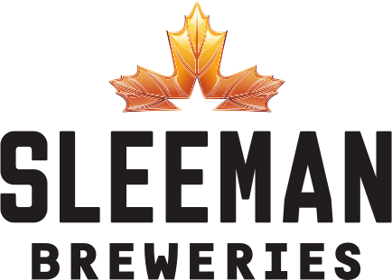

| Company | Position | Industry | Description | Dates |
|---|---|---|---|---|
| Greenlight Innovations
|
Detail Design Engineer | Hydrogen Fuel Cell Design |
|
Oct 2021 to Current |
| Suncor
|
Mechanical /
Maintenance / Project / Engineer-in-Training | Oil & Gas Consulting |
|
Mar 2019 to Oct 2021 |
Alberta Oil Tool

|
Mechanical /
Quality / Manufacturing / Engineer-in-Training |
Oil Tool Design |
|
Aug 2017 to Dec 2018 |
| Sleeman Breweries
 |
Junior Project Engineer | Beverage Production |
|
Jan 2016 to Aug 2016 |
ZCL Composites

|
Junior Design Engineer | Composite Tank Design |
|
Jan 2015 to Aug 2015 |
EDUCATION
BSc. Mechanical Engineering Co-op, University of Alberta, 2017
DESIGN AND TECHNICAL SKILLS
SolidWorks, AutoCAD- Extremely efficient with drafting programs, with a deep understanding of all functions
- Automated drafting processes for ZCL Composites and Alberta Oil Tool using expertise
- Reliable at managing CAD document libraries for access, updates, and distribution
- Able to identify proper boundary and loading conditions to perform stress simulations on 3D models
- Compiled stress reports highlighting finite element analysis findings
COMPUTING
MATLAB, MathCAD, Excel, Visio, Word, MindManager, LabVIEW, HTML5
CODES AND STANDARDS
ASME: Section II, V, VIII, IX, X, B16.5, and B31.3- Designed pressure products based on geometrical and material requirements
- Created testing procedures for pressure vessels and weld tests based on ASME requirements
- Submitted CRNs to ABSA to register pressure vessel products with supporting calculations
- Designed oilfield products to the mandated dimensions and tolerances
- Utilized hazardous area definitions to design systems around the vicinity of flammable gases
- Analyzed maintenance requirements for firewater and foam-water system components
- Utilized various publicly available codes and standards to determine maintenance and other requirements for over 1000 assets across Canada